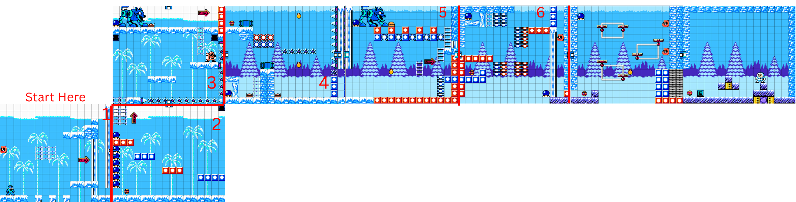

CASE STUDY 01 / LEVEL DESIGN
Finish the Ice Fortress
Mega Man-inspired level design exercise

Design Intent
I structured the level's eight screens in pairs. Each pair introduces a new mechanic or expands upon a previously introduced element.
The purpose was to reinforce player learning while gradually increasing complexity, without overwhelming the player.
DESIGN ANALYSIS / 01
Challenge Intensity
This chart reproduces the relative intensity scores recorded in my original assignment, from screen 1 through screen 8.
Relative intensity ratings from the original design study. Horizontal labels represent screen numbers.
DESIGN ANALYSIS / 02
Gameplay Elements
View the eight-screen cadence breakdown
| Screen | Gameplay elements | Intensity |
|---|---|---|
| 01 | A + B | 1 |
| 02 | A + B + F | 2 |
| 03 | A + B + C + F | 3 |
| 04 | A + D + E + F | 3 |
| 05 | A + B + C + D + E + F | 4 |
| 06 | A + B + C + D + E + F | 2 |
| 07 | A + B + F | 2 |
| 08 | B | 5 |